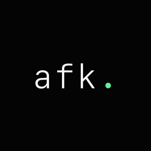

IPHONE · IOS 17+ · TEMPS D'ÉCRAN
AFK
Pro Plus 3000.
Pose ton téléphone. Quand tu le reprends, il te dit combien de temps tu étais dans la vraie vie — et te récompense. La nuit ne compte pas.
Français · English · Slovenščina — aucune donnée collectée



CE QUE ÇA FAIT
Récompense l'absence,
pas l'usage.
Rien à ouvrir. Rien à configurer.
Des récompenses à collectionner
Dès 10 minutes : ✨ Étincelle, 🍃 Bouffée d'air, 🏆 Vraie Vie, 🌍 Explorateur, 👑 Légende AFK. Chacune avec sa célébration animée.
Automatique
Grâce à Temps d'écran, une notification arrive pile quand tu reprends ton téléphone après une vraie pause. Rien à ouvrir.
La nuit ne compte pas
Le sommeil n'est pas un exploit : les heures calmes sont exclues, et une pause qui traverse la nuit repart au matin.
Mode Table
Pose le téléphone face contre la table : le décompte démarre tout seul, l'écran s'éteint, et s'arrête quand tu le relèves.
Widget en direct
Sur l'écran verrouillé et l'accueil : « dans la vraie vie depuis 2 h 34 », qui tourne tout seul.
100 % privé
Aucune donnée collectée, aucun compte, aucun serveur. Tout reste sur ton iPhone.
Une idée simple.
Tu poses le téléphone et tu vis. Quand l'écran se rallume après une longue absence, AFK te félicite pour le temps passé loin des écrans — un petit rappel que la vraie vie continue pendant que le téléphone dort. Super simple.